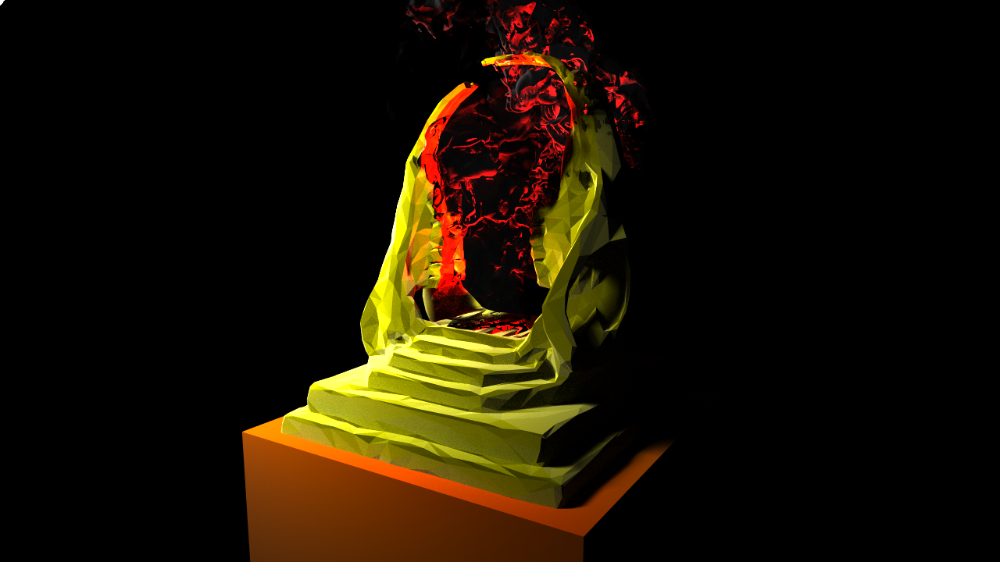

Single-Scattering Volume Rendering Project
Computer Graphics II
UC San Diego (CSE 168)
For my final project in CSE 168 I have implemented a new integrator that handles volumes. Building off the work I did for my proposal, I used the professor's class lecture on volume rendering to inform my calculations of out- and in-scattering: Functionally, the integrator is modification of the Monte Carlo path tracer used for the previous homeworks, with a Modified Phone BRDF and Cosine Sampling. Absorption and in-scattering are handled in a linear function that uses a defined constant maximum extinction coefficient and albedo. For the phase function (utilized in the process of sampling and calculating the in-scattering) I used the Henyey-Greenstein Phase Function.
Unlike the original Monte Carlo Path Tracer, my new Volume Path Tracer works as follows:
- For each pixel, cast several initial rays and check to see if it hits any object in the scene.
- If the ray hits an object, check if the material is defined as that of a volume (has extinction & albedo). If it's not a volume, path trace as usual.
- If the ray hits a volume, cast an additional ray from the intersection point and in the same direction until a non-volume surface or the other end of the volume is reached. Record distance traveled.
- Finally, if the ray has not hit a non-volume surface yet, cast a ray from the last intersection point and check for intersection, calculate direct lighting, and send value back up the chain of calls.
- At each intersection, before returning, calculate the influence of absorption / scattering using the Beer-Lambert Law, and calculate the in-scattering based on a small loop that samples directions around the intersection point. The Henyey-Greenstein phase function is included in these calculations.
I went online found a smoke asset from the OpenVDB site, and importing it into Blender, I was able to set the threshold to convert the volume into a mesh. Exporting this into an .obj file, I was able to render the image in my volume integrator.

Though I learned a great deal about volume rendering, I was unable to implement it very well in my program. Had I time enough, some things I would attempt to address in my project would be:
- Importing and using OpenVDB libraries in my project. Though the implementation of OpenVDB libraries in my project would have improved the realism of the smoke a great deal, I realized this late in my project and was at a loss to where to begin to implement this. My initial idea of rendering the mesh of a volume in the image ended up being the most I could accomplish.
- Using the GGX BRDF and sampling strategies discussed in class. As I started my final project before I had the chance to go back and fully ensure that my HW4 implementation of the GGX PDF and BRDF was complete, I decided against using it. I feel that GGX would have helped me get closer to the specific greasy metallic sheen of the skull portal on the original album art, rather than the matte material seen in the image.
Regardless, many thanks to Prof. Ramamoorthi and the course staff of CSE168 for leading an engaging and challenging class.